- 40habitaciones
- 2.000residentes al año
- 90eventos al año
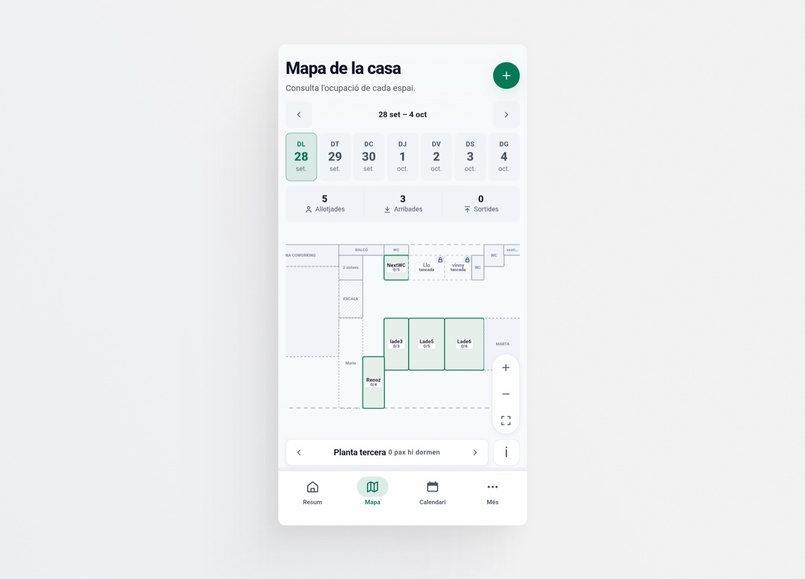
Mi papel
Product designer y product builder: del problema a la herramienta funcionando.
- Investigación. Entender cómo se gestionaban las estancias y dónde fallaba cada herramienta.
- Validación con las personas implicadas. Cada solución se contrastó con quienes gestionan antes de darla por buena.
- Decisiones de producto. Qué entra y qué no: la fuente única, el mapa, la lista inteligente y lo que se descartó.
- Diseño. Flujos, interfaz y sistema visual.
- Construcción. El MVP en 15 días, con Firebase y desarrollo asistido por IA.
Antes de empezar
Este documento recoge el estado de K Rooms en 2026: las decisiones de producto y de sistema tomadas desde el primer commit hasta el cierre del MVP.
No es un caso de éxito. Es un inventario de decisiones: qué se construyó, qué se descartó y por qué.
La decisión de partida
Konvent es un centro cultural en Cal Rosal, gestionado de forma voluntaria por las personas que lo habitan. Por la casa pasan perfiles muy distintos: gente que vive allí, residentes temporales, participantes de eventos, artistas de paso, familiares y amigos de visita.
Alguien ya se encargaba de decidir quién dormía dónde. Lo que faltaba era un único sitio donde gestionar toda esa información, con consultas ágiles y menos margen de error.
La decisión fundacional de K Rooms fue abandonar el modelo fragmentado (Excel, papel y los códigos de cada cual) y construir el contrario: un solo lugar donde vive la información, actualizado al momento y accesible para las 3 o 4 personas que coordinan la gestión.
Esa decisión obligó a responder cuatro preguntas que un equipo de producto puede dar por resueltas:
- ¿Quién va a usar esto? No un equipo dedicado, sino personas voluntarias en su tiempo libre. La herramienta tiene que quitar trabajo y aprendizaje, no añadirlos.
- ¿Todas las estancias son iguales? No. Existen 3 tipologías de estancia, cada una con una misma raíz pero con necesidades diferentes.
- ¿Qué pasa cuando el volumen crece? Un formulario que funciona para una persona es una carga para treinta. Hace falta una segunda vía.
- ¿Una habitación es un dato fijo? No. Puede cambiar de estado según el día, así que gestionarla es una tarea operativa, no administrativa.
El resto del documento explica cómo responde K Rooms a cada una.
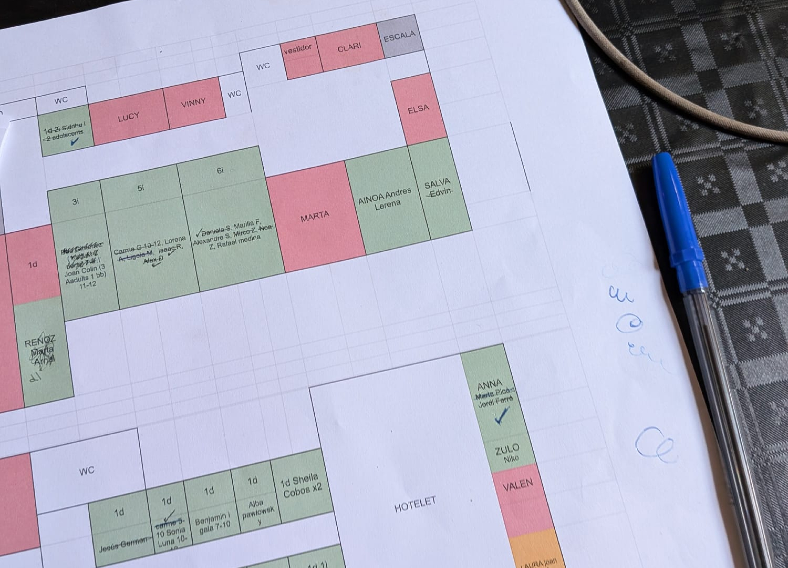
Qué había antes
El problema operativo
Antes de K Rooms, las estancias se gestionaban con un conjunto de herramientas analógicas: una hoja de cálculo, su plano impreso y la rotulación manual en cada puerta. Cada una guardaba una parte de la información, y lo que se anotaba en una no aparecía en las demás.
Qué fallaba
- Diversas fuentes en lugar de una. Cada cambio obligaba a actualizar varios soportes a mano.
- Información en cambio constante. Llegadas, salidas, cambios de última hora. La realidad iba más rápido que las herramientas.
- Ninguna fuente era fiable. El Excel se quedaba desactualizado y el papel no recogía los cambios. Ninguna era la verdad; todas eran versiones parciales.
- Cada persona usaba sus propios códigos. Entender una anotación dependía de quién la había escrito y de si estaba disponible para explicarla.
- Mantenerlo al día consumía tiempo. Un trabajo extra que rompe con la organización diaria de las personas voluntarias.
Una habitación, dos personas
Dos personas organizaban dos eventos distintos. Una llevaba su parte en papel; la otra, en el Excel. La misma habitación acabó asignada a dos huéspedes a la vez.
No fue un descuido. El sistema no garantizaba que la información llegara a tiempo: cada persona anotaba con su herramienta y a su manera, y la coordinación solo funcionaba si alguien se sentaba a cruzar las distintas fuentes.
No fue una anécdota. Fue el síntoma más visible de la fragmentación.
Por esa razón, K Rooms propone un único circuito: quien gestiona introduce o modifica la información una sola vez, y los datos y las habitaciones se actualizan al momento.
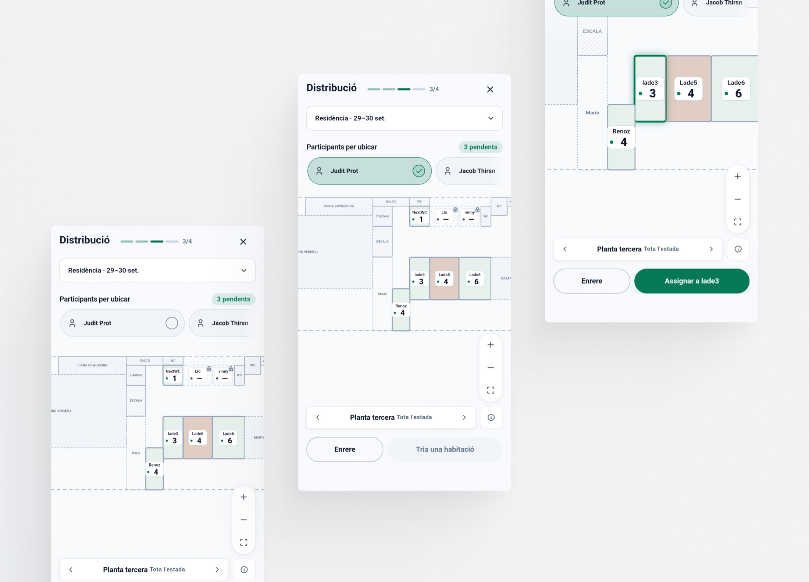
De un producto genérico a uno a medida
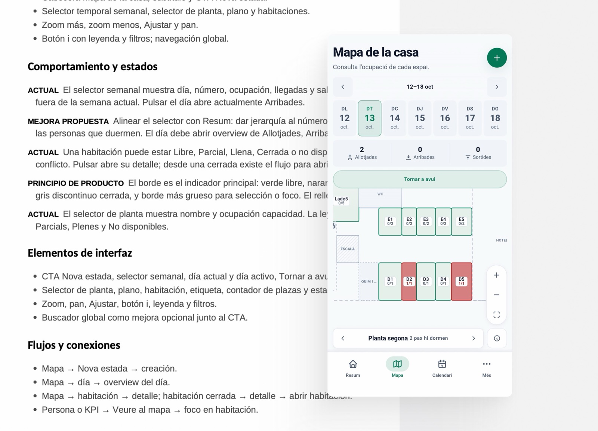
1 · Solo los datos que se usan de verdad
| La idea inicial | Una tarjeta con scroll horizontal: ocupación diaria y, al deslizar, semanal. Los mismos datos a dos niveles de zoom. | |
| El choque | Duplicaba la información sin aportar nada nuevo. Más ruido, no mejores decisiones. | |
| El rediseño | Un solo nivel: tres indicadores del día (cuántas personas duermen, cuántas llegan, cuántas se van) y, en lugar del scroll, un selector visual de fecha. | |
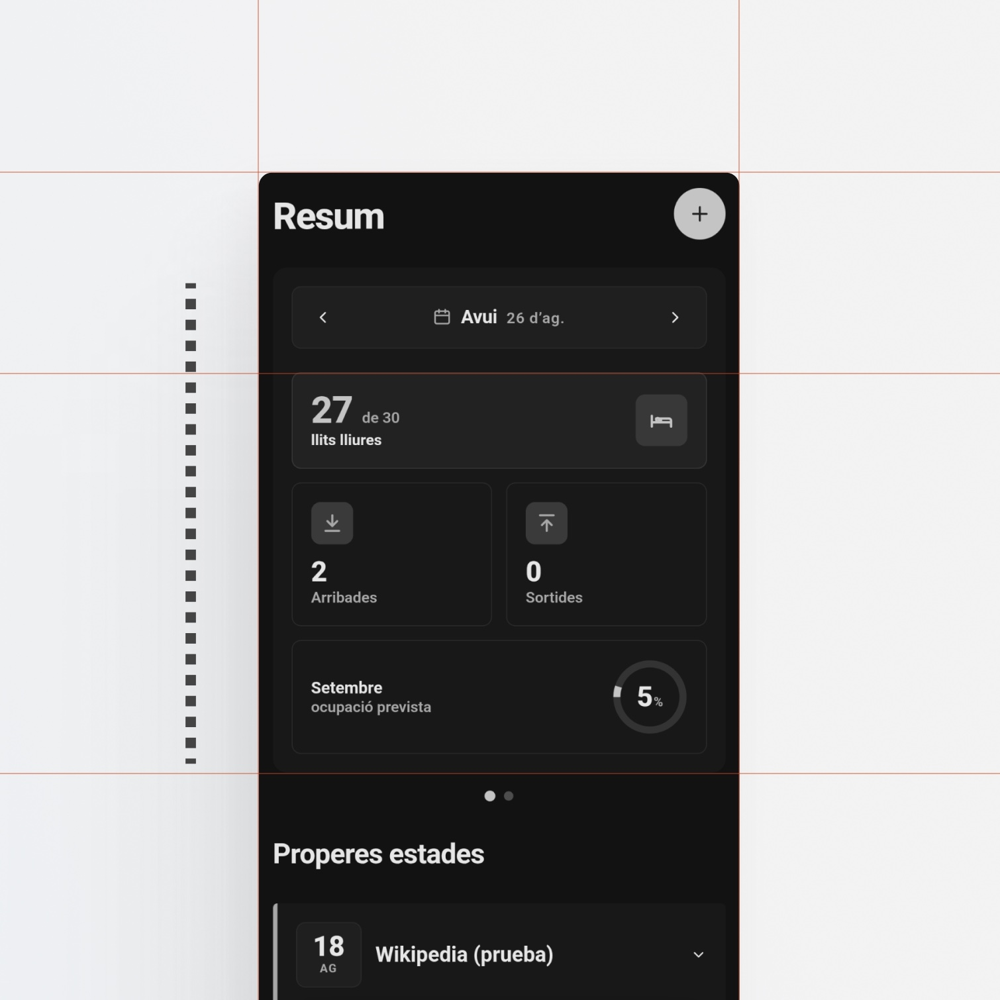
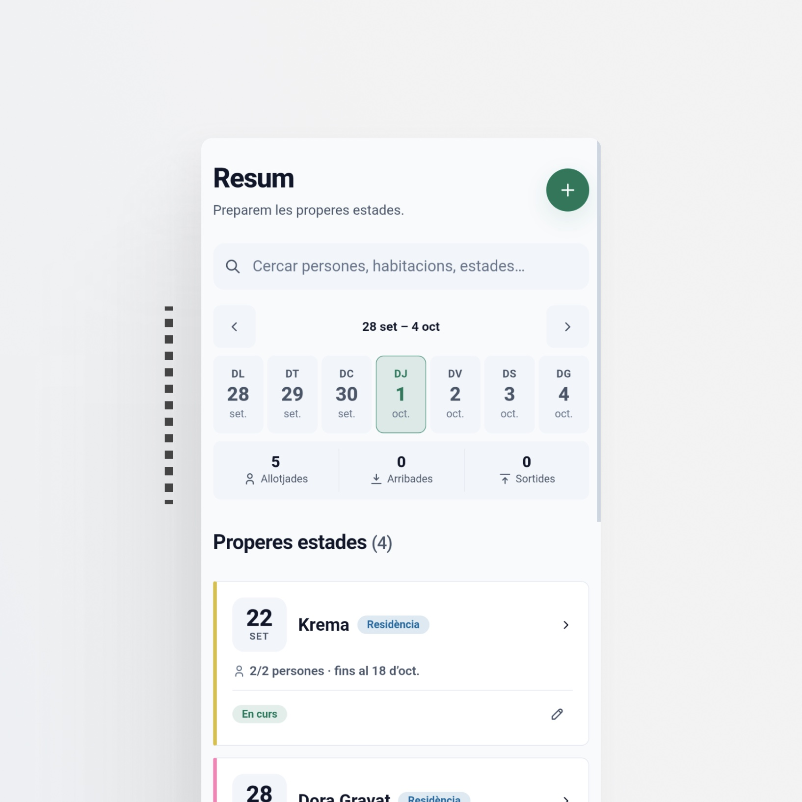
2 · Un mapa, la forma en que ya lo resolvían
| La idea inicial | Asignar personas a habitaciones con desplegables organizados por planta. | |
| El choque | Abstracto y lento. Sin referencia espacial, cada asignación era un clic a ciegas. | |
| El rediseño | Un mapa. Primero se probó una vista isométrica, que no aportaba nada. La vista cenital se entiende al primer segundo: es la que ya usaban las personas usuarias para resolver el problema, de modo que se aprovecha una solución familiar, no una novedad. | |
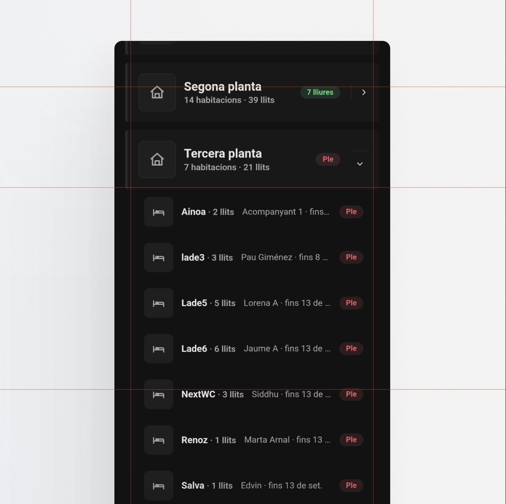
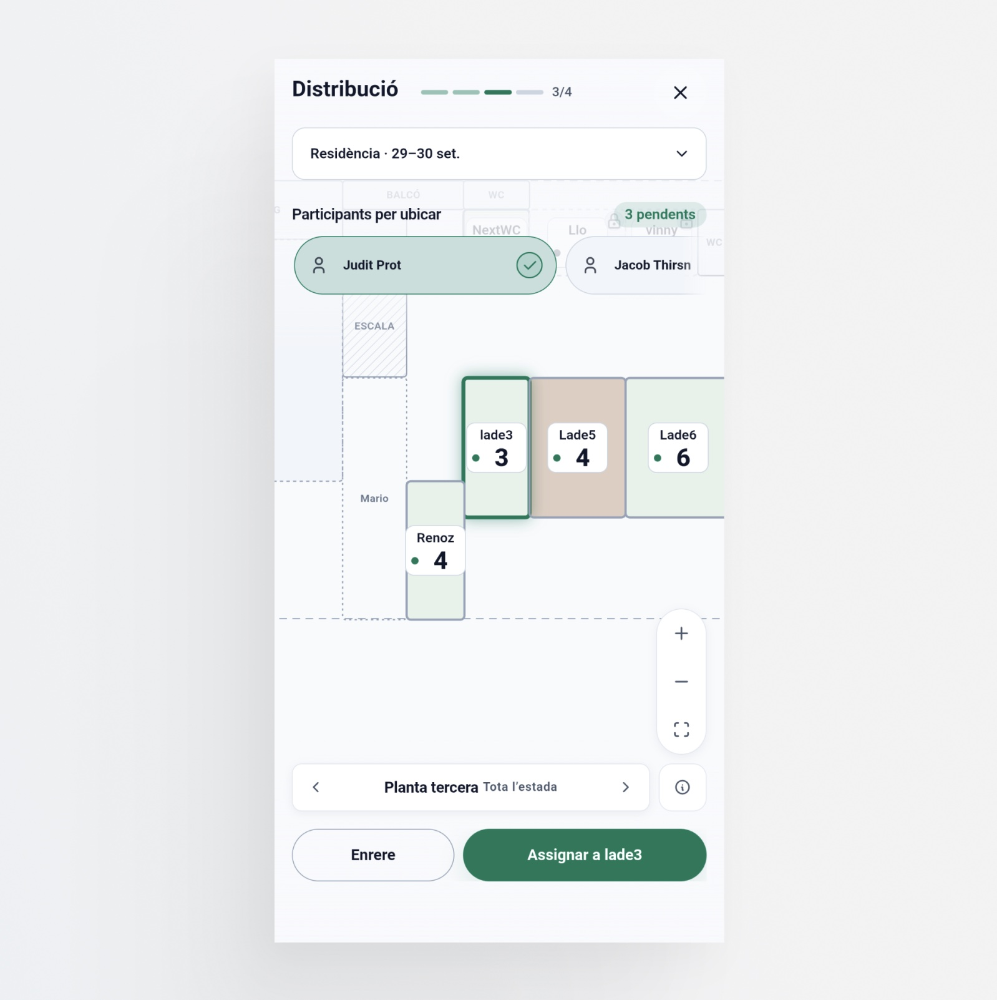
3 · Un backoffice lejos de la urgencia del día a día
| La idea inicial | Administrar las habitaciones desde un backoffice separado. | |
| El choque | El producto tiene que moverse con agilidad. Abrir o cerrar una habitación, añadir un colchón: son cosas que pasan a lo largo del día, y pasar cada vez por el backoffice era fricción. | |
| El rediseño | La ficha de la habitación gana ese poder: la capacidad se edita ahí y se abre o cierra desde el mapa. El backoffice se mantiene para lo estructural, como dar de alta nuevas habitaciones. | |
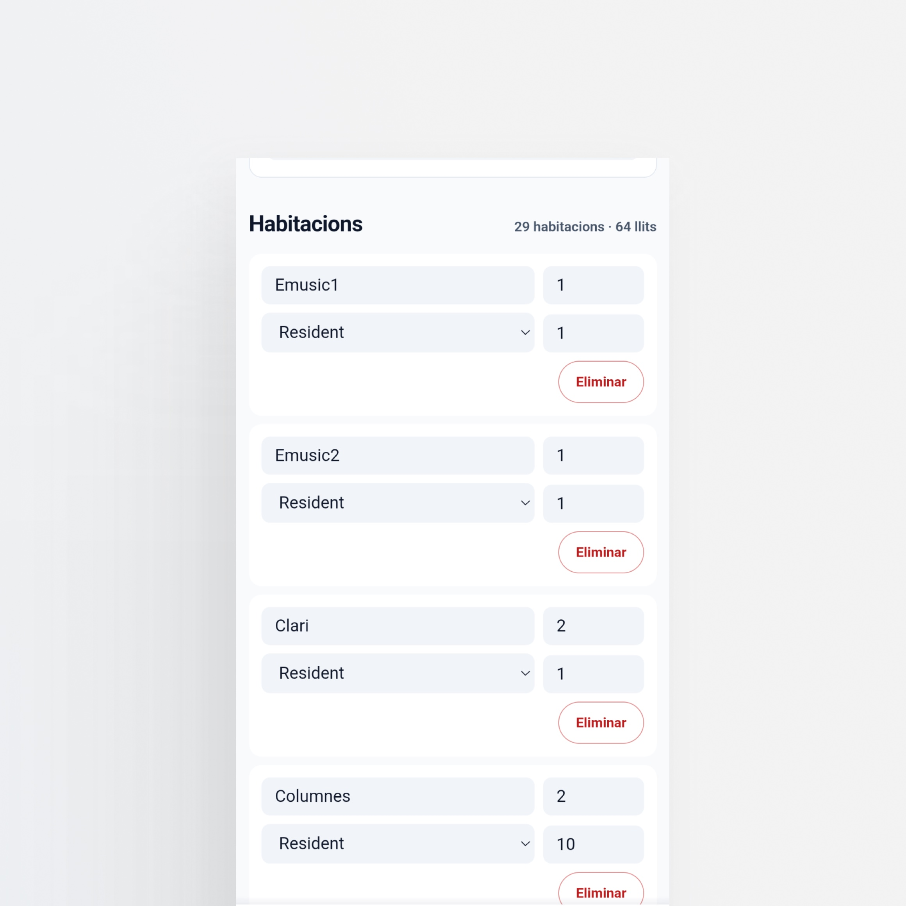
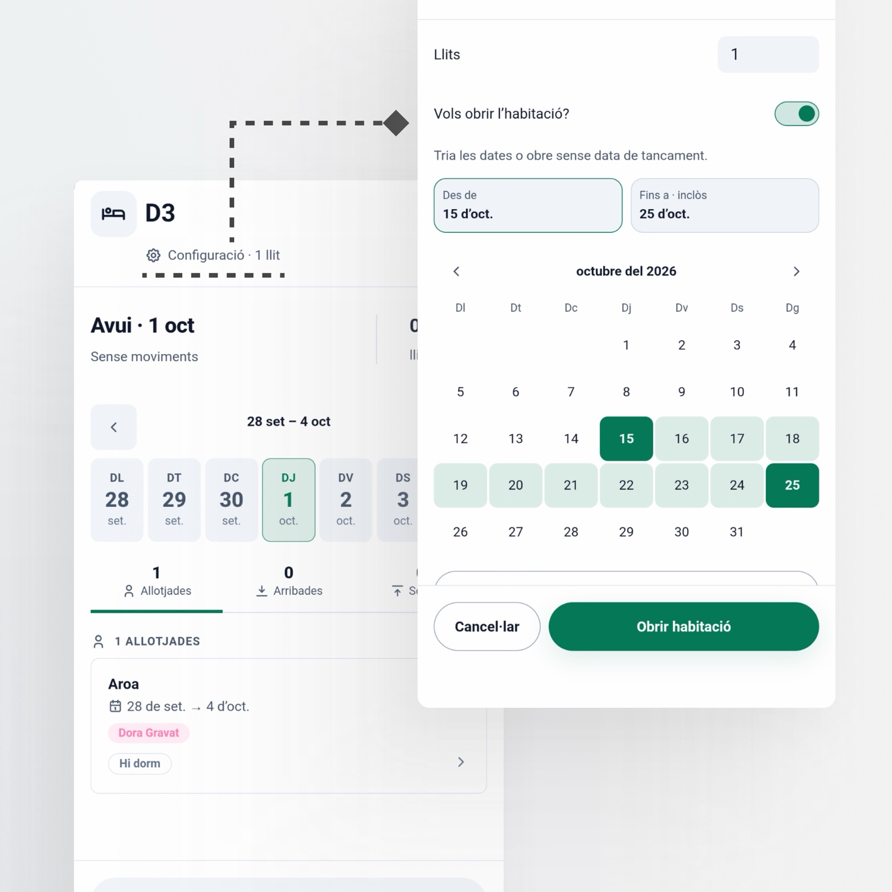
Una misma raíz, necesidades distintas
Tipología de la estancia
No todas las estancias son iguales. El sistema distingue tres tipos, y cada uno se gestiona de forma distinta.
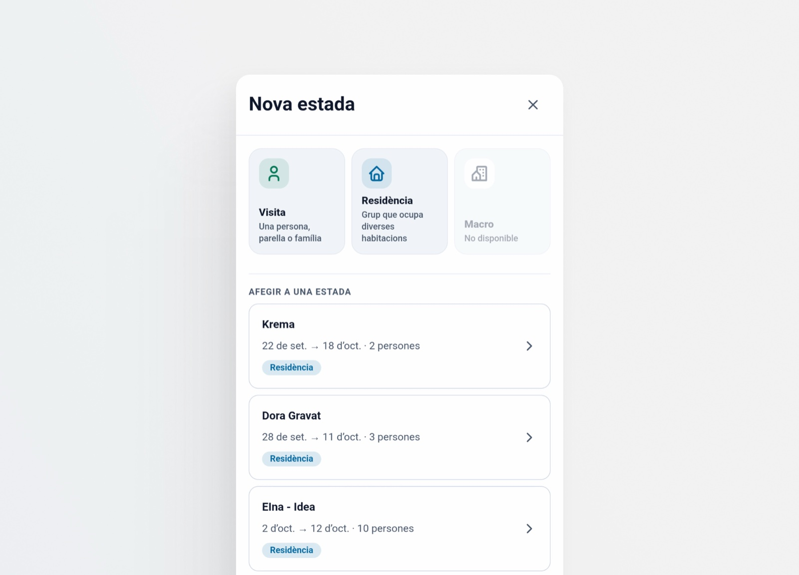
| Tipo | Qué es | Cómo se gestiona | Escala |
|---|---|---|---|
| Visita | Una o varias personas que vienen de forma puntual | Se asignan habitaciones según necesidad y disponibilidad | Una o varias habitaciones |
| Residència | Grupo con fechas estables | Cada participante tiene sus propias necesidades y circunstancias | Varias habitaciones |
| Macro | Evento que ocupa toda la casa | Ocupación máxima: habitaciones más espacios comunes habilitados para dormir | Más de 60 personas |
La simplicidad de un flujo complejo
Registrar una estancia empieza con una pregunta inocente: «¿Quién viene?». A partir de ahí, el árbol se ramifica:
- Una persona sola. Directo.
- Varias personas. ¿Cuántas y de qué edad?
- Adultos. Siempre ocupan una cama.
- Niños. ¿Necesitan cama o no?
- Bebés. ¿Necesitan cama o duermen con sus padres?
- Fechas. ¿Qué días? ¿Son continuas o discontinuas?
- Habitaciones. ¿Cuáles están disponibles y cuáles ocupadas? ¿Cuántas camas tiene cada una? ¿Compartirán habitación? ¿Y cama?
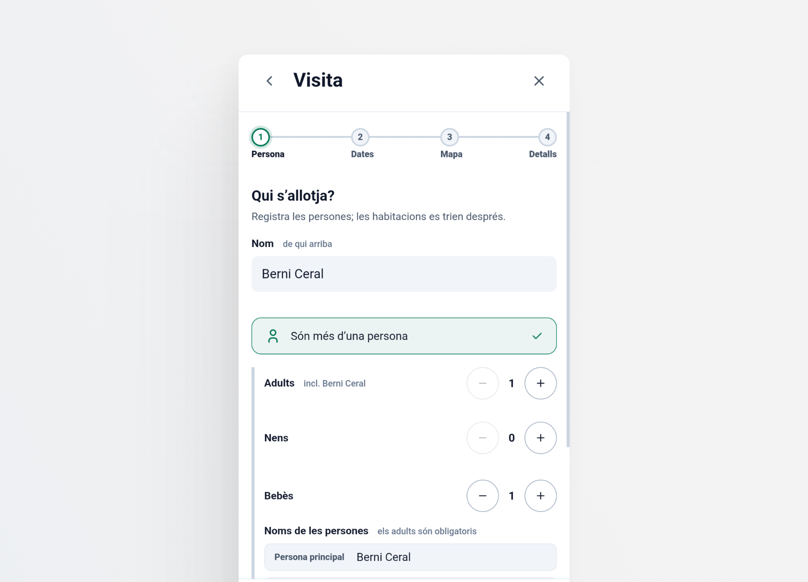
Cualquier combinación cabe en el mismo flujo, y también los cambios: modificar tiene que ser rápido, sin perder el contexto ni empezar de cero.
| Caso | Qué se registra |
|---|---|
| Una familia con tres niños | 2 adultos y 3 niños, cada niño con o sin cama. |
| Una pareja con un bebé | 2 adultos y un bebé que duerme con ellos, sin cama propia. |
| Un grupo de diez adultos | 10 personas, cada una con sus propias fechas. |
| Una persona con fechas discontinuas | Dos tramos de fechas para la misma persona. |
| Alguien llega más tarde | Se ajusta la fecha de entrada. |
| Alguien se va antes | Se ajusta la fecha de salida. |
| Alguien no necesitaba cama | Se libera la cama sin rehacer la estancia. |
Cuando el flujo no escala
El formulario sirve para una familia. Para una residència de 20 o 30 personas, la lista de participantes ya existe en un email, un Excel o un mensaje.
La segunda vía: la lista inteligente. Pegas los nombres y cada línea se convierte en un registro con su nombre y sus fechas. Sin pasar por el formulario.
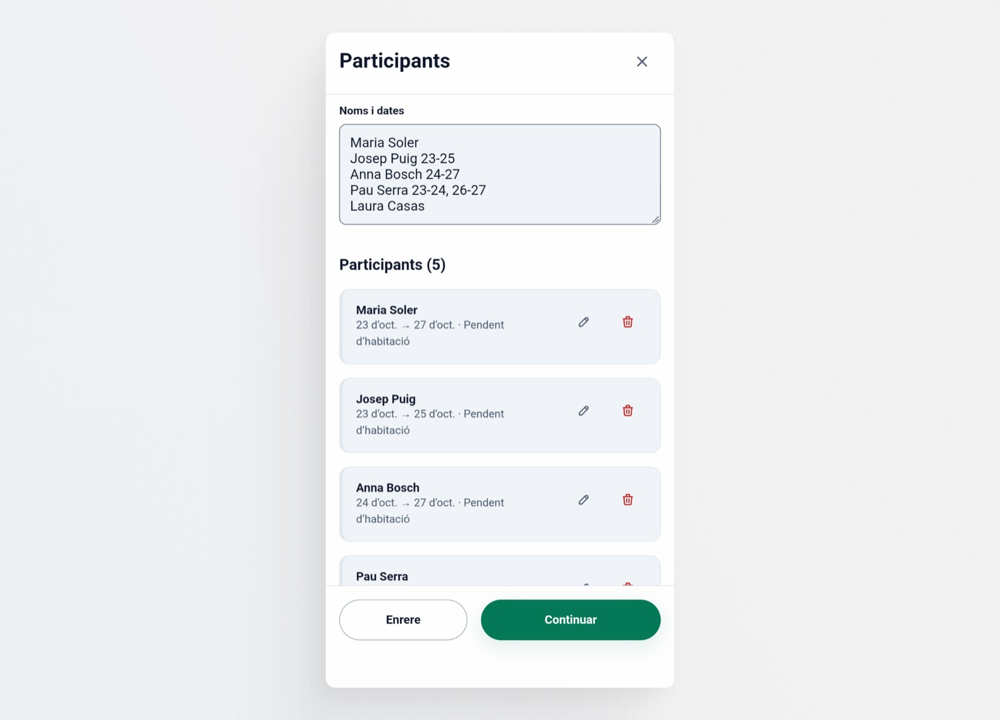
| Formulario | Lista inteligente | |
|---|---|---|
| Visita Una persona o una familia |
Ágil y asumible: pocos campos y control del detalle. | Innecesaria: no compensa para tan pocas personas. |
| Residència 20 o 30 personas |
Inasumible: repetir los mismos campos decenas de veces es tedioso y hace perder la agilidad. | Ágil: se pega la lista y cada línea es un registro. |
Un producto sin curva de aprendizaje
No todo el mundo sabe manejar un Excel. En cambio, los patrones de cualquier app —listas, botones, selectores, iconos— forman un vocabulario visual que casi todo el mundo reconoce.
K Rooms está construido con ese vocabulario, y funciona igual en el móvil que en el ordenador. Gestionar deja de ser «algo que hay que saber hacer».
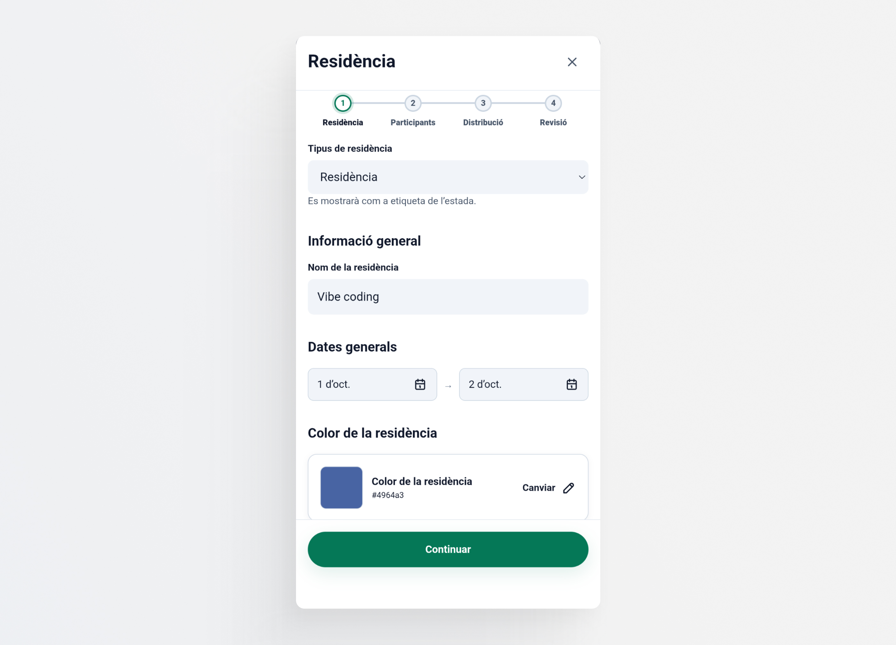
Lo que no se construyó
Lo que se decidió no hacer explica el producto tanto como lo que se hizo.
| Descartado | Por qué | Qué se hizo en su lugar |
|---|---|---|
| App nativa iOS/Android | Para 3 o 4 personas no compensa mantener dos apps. El navegador ya está en todos sus dispositivos. | Web app responsive. |
| Backend propio en la Pi | Varias personas editan a la vez y necesitan ver los cambios en tiempo real. | Firebase como capa de datos. La Pi solo sirve la aplicación. |
| Registro con email y contraseña | Las personas que gestionan ya se conocen. Un sistema de cuentas completo sería fricción sin valor. | Acceso restringido por invitación. |
| Modo consulta público | Abrirlo antes de tener un MVP estable solo generaría ruido y confusión. | Acceso solo para quienes gestionan. Fase 2. |
| Notificaciones push | No resolvían el problema real, que era la información fragmentada, no la falta de avisos. | La propia fuente única. |
| Integración con Google Calendar | Copiar la información a otro sitio reintroduce el problema original. | El mapa como única vista operativa. |
| Facturación o cuotas | No hay transacciones económicas entre Konvent y sus residentes. | Nada. |
| Multiidioma | El contexto es local. Varios idiomas diluyen el vocabulario compartido. | Un solo idioma. |
| Panel de analítica | Todavía no hay volumen de uso que lo justifique. | Nada. Fase 2, si hace falta. |
El patrón
Cada «no» protege una decisión de fondo: K Rooms es una herramienta operativa para un centro cultural, hecha a medida, con las mínimas dependencias externas y pensada para personas voluntarias.
No es un SaaS. No es una app móvil. No es un sistema de reservas comercial. No es un panel de analítica.
El resultado
Antes, la información vivía repartida en un conjunto de herramientas analógicas —hoja de cálculo, plano impreso y rotulación en las puertas— y cada cambio dependía de que alguien lo pasara a limpio.
Hoy vive en un solo lugar. Quien gestiona introduce o modifica una vez, y los datos y las habitaciones se actualizan al momento para todas las personas que gestionan.
Una única fuente de verdad, compartida y siempre al día. Las 3 o 4 personas que coordinan la gestión trabajan sobre lo mismo y ven lo mismo, sin versiones contradictorias ni cambios que se pierdan por el camino.
Se reduce lo que más costaba: el error y la confusión, la improvisación, el estrés y el tiempo que se iba en cuadrar archivos. Y se gana agilidad: la información está disponible cuando se necesita y cambiarla lleva segundos.
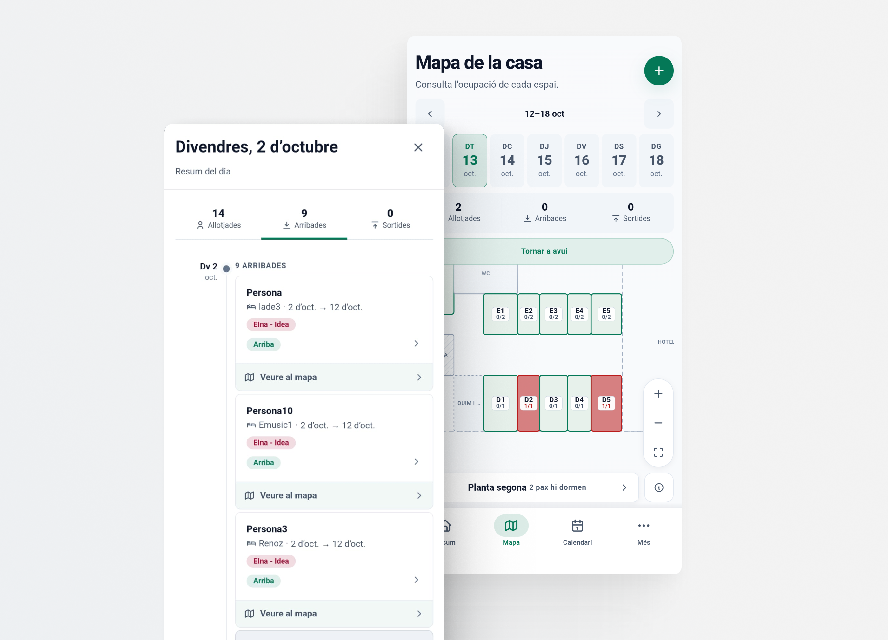
Lo que se aprende
- La fuente única, primero. Antes de añadir funcionalidades, conviene cerrar la posibilidad de que existan dos versiones de la misma información.
- Entender el objetivo cuando un flujo no escala. Un formulario que sirve para una persona es una carga para treinta: en lugar de pulirlo, se abre otra vía pensada para el volumen.
- Mirar cómo resuelve el problema el propio usuario. Aquí ya existía un plano de la casa en el Excel: el mapa cenital recoge esa forma de pensar en lugar de inventar otra.
- Datos que ayuden a decidir. Mostrar lo que se necesita hoy, no todo lo que se puede medir.
- Un producto que ya se sabe usar. Patrones validados, mínima fricción y nada nuevo que aprender.